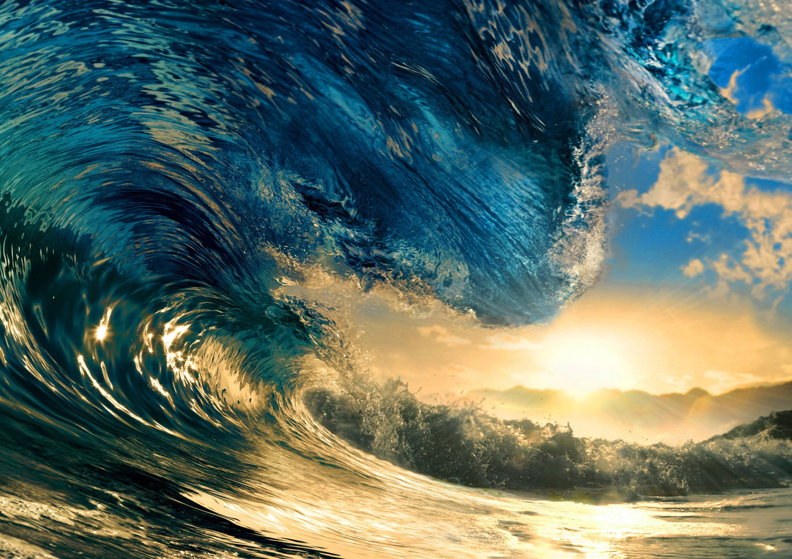

Fascinating Facts About Water
Water covers approximately 71% of the Earth's surface, making it the most dominant natural feature of our planet. From vast oceans to quiet lakes and flowing rivers, water shapes landscapes and supports ecosystems everywhere.
The Pacific Ocean is the largest and deepest ocean on Earth, containing more than half of the planet's free water. Despite its size, scientists estimate that over 80% of the ocean remains unexplored, leaving countless mysteries beneath the surface.
Why Water Matters
Water is essential for all known forms of life. It regulates body temperature, supports plant growth, and allows vital chemical reactions to occur. Without water, ecosystems would collapse and life as we know it would not exist.
Oceans also play a major role in controlling Earth's climate by absorbing heat and carbon dioxide. This helps stabilize global temperatures and reduces the impact of climate change.
Freshwater vs Saltwater
About 97% of Earth's water is saltwater found in oceans, while only about 3% is freshwater. Of that small percentage, most is trapped in glaciers and ice caps, leaving a limited supply available for human use.
Protecting freshwater sources is incredibly important as populations grow and demand increases. Conservation efforts help ensure clean and safe water for future generations.